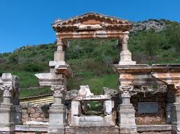

Geç Roma döneminde Kuretler caddesinin doğu çıkışına yerleştirilen iki sütundur. Bu görkemli iki sütun caddeyi oldukça daraltır, bunun da araç trafiğini engellemek için yapıldığı düşünülmektedir.

"İzmir"e dönmek için basın